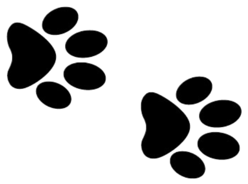

Give a Dog a Home
Embark on a heartwarming journey and discover the incredible dogs awaiting their forever homes at nearby dog rescues in the UK. These furry friends are eager to become cherished members of your family. At these dog rescues, you'll encounter a diverse range of breeds, sizes, and personalities. Whether you're looking for a playful and energetic companion or a calm and gentle soul, there's a dog out there waiting to capture your heart.
Find a Dog Rescue 
Don't Buy a Dog
Choosing dog adoption over other alternatives, such as purchasing from breeders or pet stores, actively supports the mission to end dog homelessness and promotes responsible dog ownership. By adopting, you become an advocate for change. Remember - adopt don't shop!
Make a Difference
By adopting a dog from these rescues, you not only gain a loyal and loving companion but also make a profound difference in a dog's life. Your decision to provide a caring home can transform their world, offering them a second chance at happiness and security.
The Joy of Rescued Dogs
Rescue dogs have an incredible capacity for gratitude and unconditional love. They quickly adapt to their new environment and form deep bonds with their adoptive families. The joy and fulfillment they bring to your life are immeasurable.
Create a Brighter Future
Immerse yourself in the enchanting world of rescue dogs and experience the profound bond that comes from offering a loving and caring home. Together, let's make a positive impact and create a brighter future for these deserving furry friends. By choosing adoption, you actively support animal welfare and contribute to the mission of ending animal homelessness. This compassionate choice sends a powerful message that every life deserves love and care. It promotes responsible pet ownership and encourages others to follow suit. Together, we can create a world where every dog has a safe and loving home.